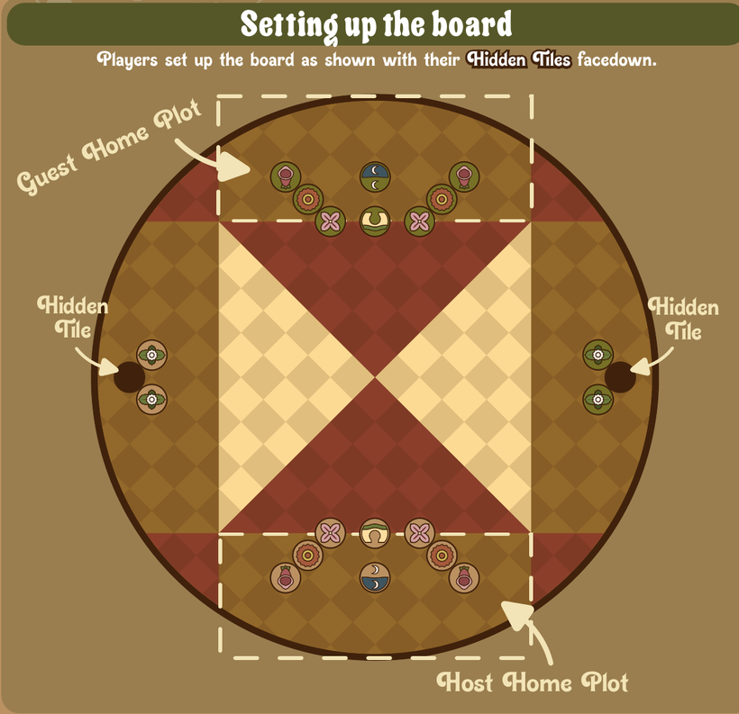
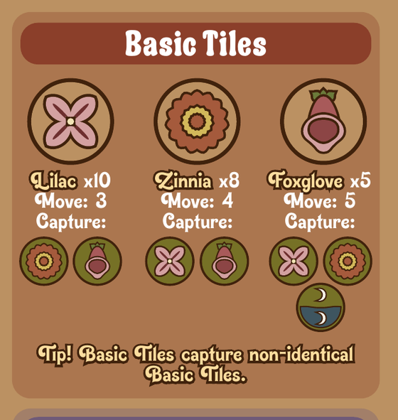
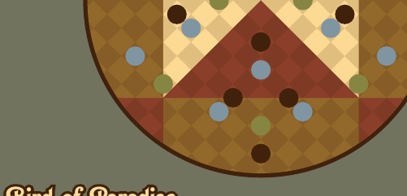

Adevăr Pai Sho
A game of hidden objectives and deduction — win by completing your secret goal, or by unmasking your opponent's.
How to Play
Before the game starts, each player chooses their win condition by selecting a Hidden Tile and placing it facedown on the board, as shown in the setup.
Objective
Complete your own secret objective, or discover and capture your opponent's secret objective.
Taking a Turn
Starting with the Host, players can either move a tile or deploy a new tile.
Capturing
To capture, move or deploy one of your tiles onto a tile it is allowed to capture. If that tile is a Basic Tile, it is removed from the game.
Movement
Tiles are played in the spaces and can move to adjacent empty spaces, up to their maximum movement.
Setting Up the Board
Players set up the board as shown, with their Hidden Tiles placed facedown to the sides. Each player has a Home Plot — the Guest at the top, the Host at the bottom.

Basic Tiles
Each player commands a garden of Basic Tiles in three types. Their movement range and capture relationships are shown below.

The Board & Plots
The board is divided into Plots, and each Plot limits how many Basic Tiles it can hold per person:
- Red Plots — limit 2.
- White Plots — limit 3.
- Open Plots — no limit.
If a Basic Tile sits in two Plots at once, it counts as half in each. Special Tiles never count toward Plot limits.
A Basic Tile only counts toward a limit if it ends its movement inside the Plot — so tiles may travel through a full Plot as long as they don't stop inside it.
Special Tiles
Special Tiles are returned to their owner's hand when captured, rather than removed from the game.
Gate ×2
Can be placed adjacent to a Basic Tile you own. New tiles may only be deployed adjacent to your Gate. The Gate that starts on the board is your Home Gate; the one in your hand is your Away Gate.
Vanguard ×2
Both Vanguards must be captured before the Hidden Tile they guard can be captured. They regrow if either: the attacking Second Face attempts to capture the Hidden Tile and fails, or you capture the opponent's Second Face tile.
Reflection ×1 MOVE 5
When your Reflection is captured, you must flip over your Hidden Tile. The Reflection can only be deployed through your Home Gate.
Hidden Tiles — Secret Objectives
Your Hidden Tile is the secret win condition you chose at setup. Complete it and declare to win. The seven objectives are:

Second Face Tiles
If you deduce which Hidden Tile your opponent chose, you can deploy the matching Second Face tile (Move 7) to capture their Hidden Tile and win the game.
- You may only play two different Second Face tiles in a single game.
- You may only have one Second Face tile in play at a time. Deploy another while one is in play, and the old one returns to your hand.
- If you reveal your opponent's Hidden Tile and already have an incorrect Second Face tile on the board, remove that tile from the game.
Winning
To win, you must complete your objective or capture your opponent's Hidden Tile.
When you attempt to capture a Hidden Tile, first declare that you are doing so. Your opponent then states whether that Second Face tile is able to capture their Hidden Tile. If it can, you win. If it can't, remove the Second Face tile from the game and regrow the Vanguard tiles surrounding that Hidden Tile.
A draw occurs when all players are unable to complete any of their win conditions.